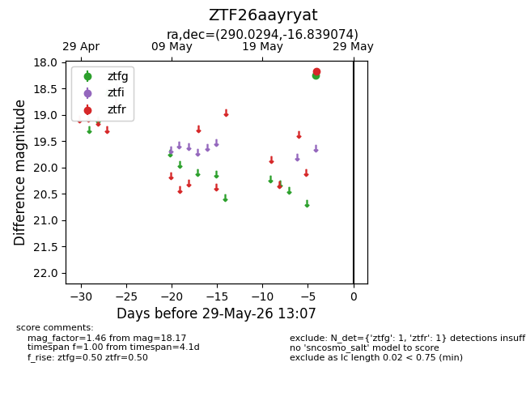
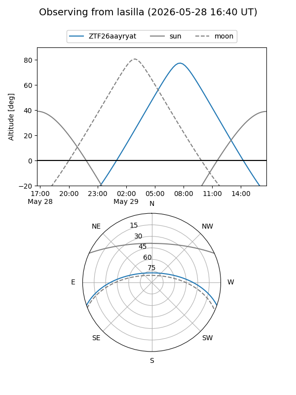
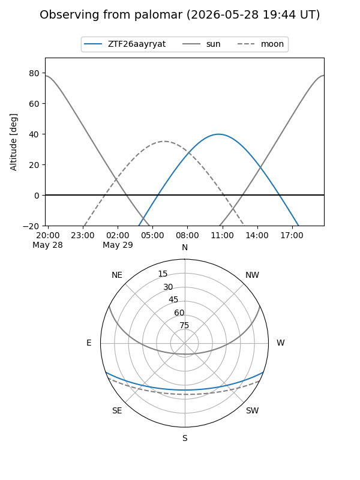

ZTF26aayryat
Target ZTF26aayryat at 2026-05-29 13:08
Aliases and brokers:
lsst-FINK: link
lsst-Lasair: link
lsst-ALeRCE: link
ztf-FINK: link
ztf-Lasair: link
ztf-ALeRCE: link
alt names
ZTF26aayryat (ztf,fink_ztf)
Coordinates:
equatorial (ra, dec) = 290.0294,-16.83907
equatorial (HMS+DMS) = 19:20:07.07,-16:50:20.67
galactic (l, b) = (20.8458,-13.79276)
Flags:
Photometry:
last ztfg=18.25, ztfr=18.17
1 ztfg, 1 ztfr detections
Lightcurve

Visibility


Additional plots